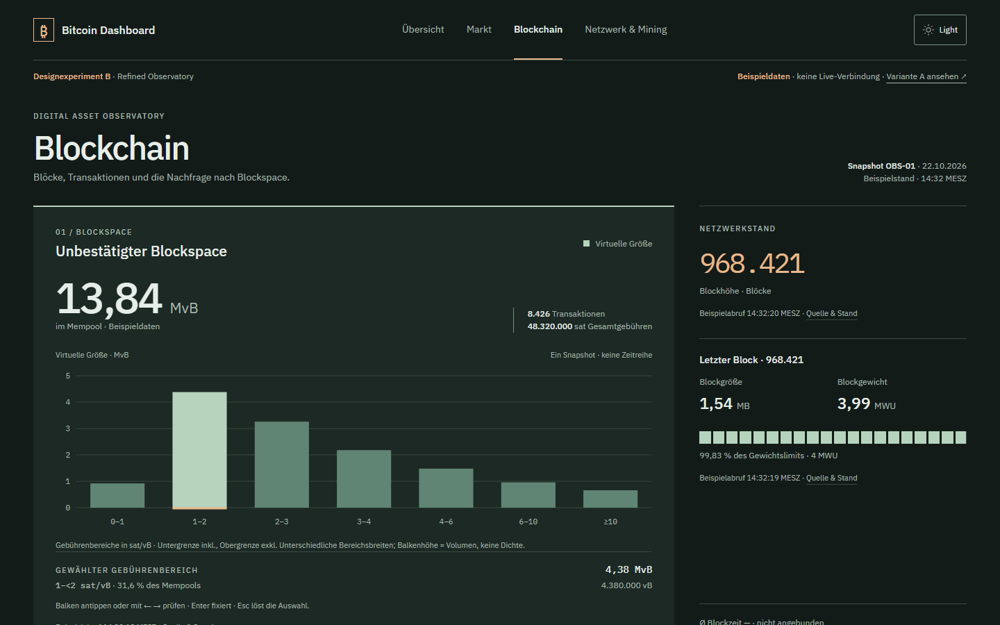
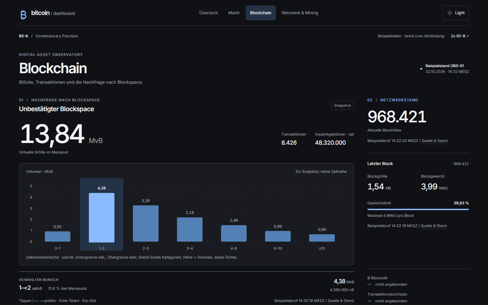
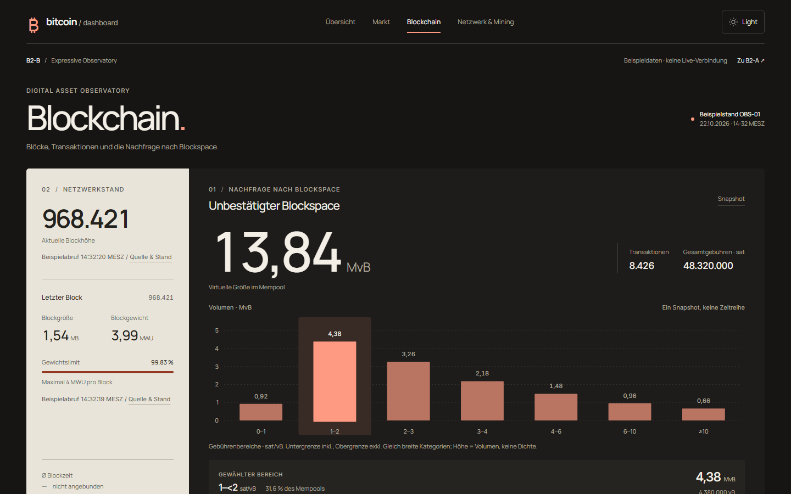
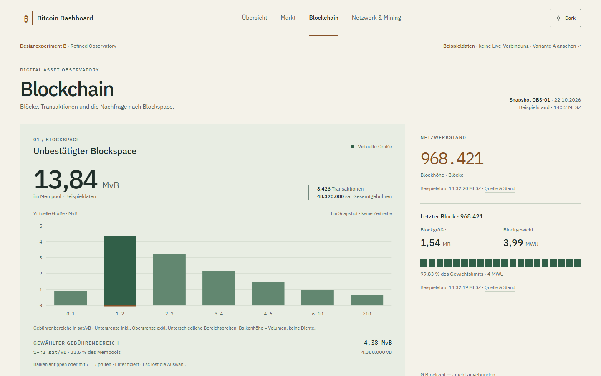
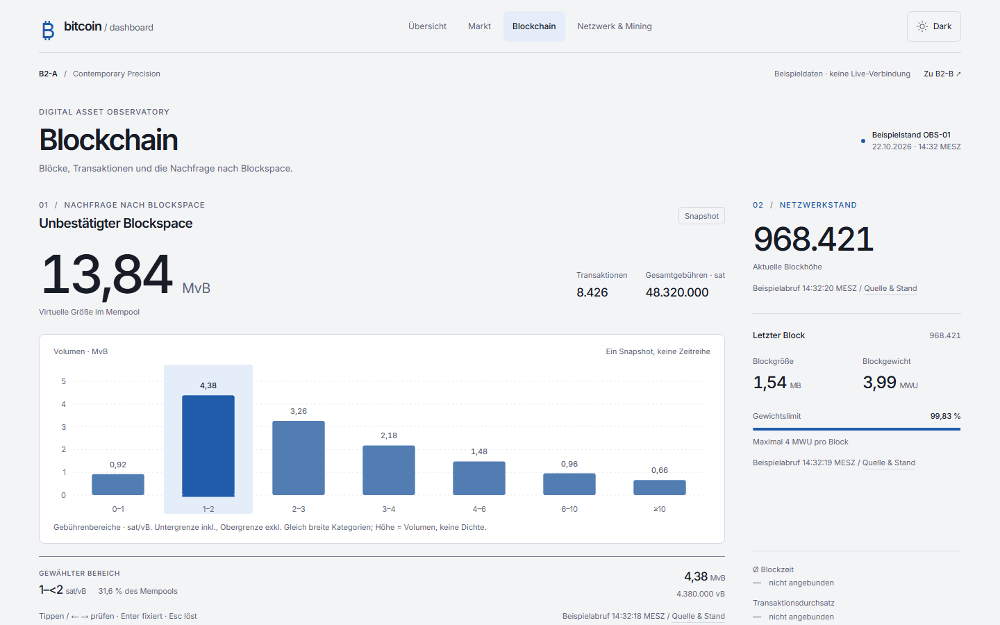
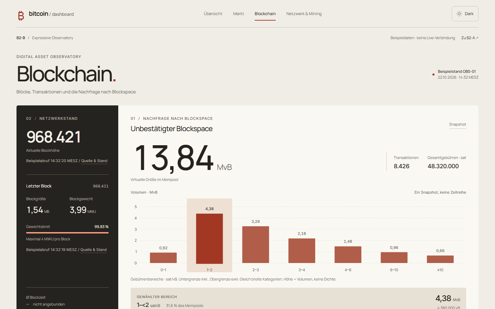

← Prototypen · Originalrenderings jeweils 1440 × 900, hier auf 50 % verkleinert. Identischer Fixture-Stand und ausgewählter Gebührenbereich. Zum Prüfen der Details die einzelnen Prototypen öffnen.
Refined Observatory → Contemporary Design Refinement
Dark / OBS-01 / 1440 × 900 / Auswahl 1–<2 sat/vB


Refined Observatory → Contemporary Design Refinement
Light / OBS-01 / 1440 × 900 / Auswahl 1–<2 sat/vB

